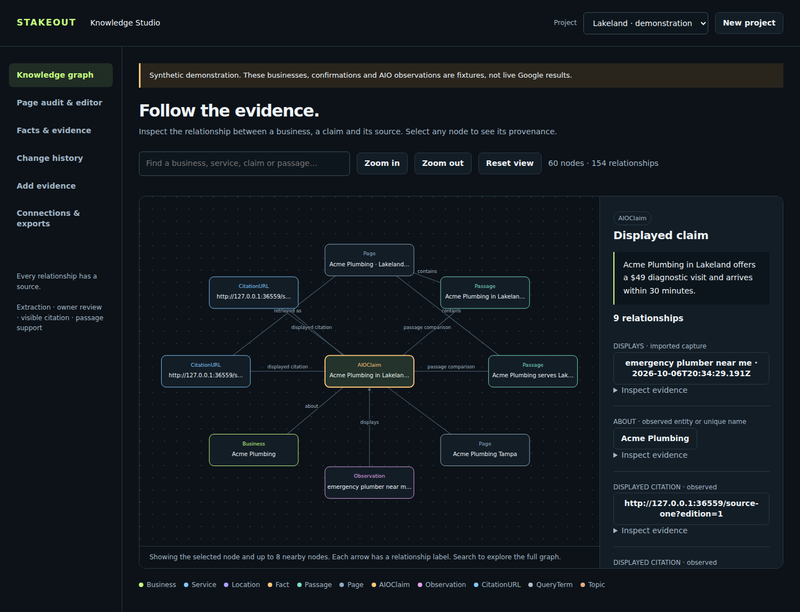

Build pages from
inspectable evidence.
Stakeout Knowledge Studio · AIO Tracer 3.0
Launch the actual editor
Install Python 3.11 or newer. Open a terminal in this extracted folder and run:
python3 graph_studio.py --demo
On Windows, use python instead of python3, or double-click Start_Knowledge_Studio.bat.
Then open http://127.0.0.1:8765. The local graph, audit and editor require no API key. This start page is an introduction; the running app is where you add and edit content.
Try the complete workflow
- Open Knowledge graph and inspect a displayed AIO claim.
- Open Page audit & editor and choose client.example/lakeland.
- Click Audit page. Review the missing relationships and ambiguous terms.
- Select a confirmed fact, click Build from selected quotes, then edit and save the draft.
- Open Change history to inspect the draft event and two earlier demonstration observations.
- Click New project to begin with your own business and source pages.
The demonstration is synthetic. It does not show a live Google result or a proven SEO improvement. Gemini and Neo4j adapters require your own account configuration; live provider calls remain unverified.
Graph and page editor
These are screenshots of the running app. Graph nodes, source inspection, editing, saving and exports work in the local app.

View the page audit and draft editor
Included in this complete package
The current tracer, source code, tests, graph editor, provider adapters and demonstrations are included. Your uploaded v1.1 sources are preserved under legacy_v1_1/.